Sail trim trainer
Every control on the boat, wired to a real velocity prediction model. Move the traveller and the numbers move for a reason — because the angle of attack changed, the leech twisted, the side force went up and the boat heeled.
Everything is unlocked until 17 November 2026. All five boats, the 3D and cutaway views, the full rig and weather — no card, no signup. I'd rather find out what needs fixing than charge for it half-finished.

Most sailing apps animate a boat. This one solves it — apparent wind, lift and drag per sail, forestay sag, heel, leeway, rudder drag and added resistance in waves, recomputed around sixty times a second.
The target isn't a lookup table. It re-solves the same physics with optimal trim for your exact wind, angle and sea state. So the percentage measures your trimming alone — not the boat, and not the breeze.
Every hint carries the drive it expects to add. You learn which controls matter where: upwind in breeze the backstay dominates, at 120° it's the vang and the pole. That ranking is the lesson.
Cutaway sections at head, middle and foot show camber, draft position and twist as you pull the string. Colour tells you which part of the sail is off the groove — the top can stall while the bottom is perfect.
Telltales are measured against optimal trim for the angle you're sailing, so they mean something downwind too — where every sail is technically stalled and an absolute reading would tell you nothing. Magenta is under-trimmed, amber over-trimmed, teal is in the groove.
| Colour | What it means | What to do |
|---|---|---|
| Magenta | Windward telltale lifting | Sheet in, or bear away |
| Amber | Leeward telltale stalling | Ease, or head up |
| Teal | Both streaming | Hold it |
Not one hull with different numbers painted on it. Monohulls get their stability from ballast, catamarans from beam — a different equation, which is why the cat carries 117 m² at three degrees of heel and warns you about righting moment instead of heel angle.
| Boat | Disp | Beam | SA | |
|---|---|---|---|---|
| 40 ft cruiser-racer | 8.6 t | 4.0 m | 94 m² | Free |
| 35 ft sportboat | 3.8 t | 3.4 m | 74 m² | |
| 48 ft bluewater cruiser | 18 t | 4.5 m | 132 m² | |
| 42 ft cruising catamaran | 12.5 t | 7.2 m | 117 m² | |
| 45 ft performance catamaran | 9.0 t | 7.6 m | 140 m² |

The sea state is a wave field, not a texture: three components fanned around the wind direction with sharpened crests, plus short chop that gives the water its texture and shows the cat's-paws. Crests break where the wind is strong enough to break them, and the whole scene — sky, sea, cloud cover — greys down as it builds.
| What you'll notice | Why it's there |
|---|---|
| The boat pitches and heaves | Attitude is sampled from the wave under the hull, bow to stern |
| Whitecaps appear around 12 kn | Breaking is driven by wind, not by the swell height |
| Sails look like cloth when right | Correct trim reads as dacron; errors bloom magenta or amber |
| Bow wave grows with speed | Kelvin wedge scaled off boat speed, with transom wash astern |

Trim is in its first season. Until 17 November 2026 every feature below is open to everyone — no account, no card. After that Easy Trim stays free forever, and the deeper features become a subscription. The table shows where that line will fall.
| Open to everyone until 17 Nov | Easy Trim | Pro |
|---|---|---|
| 40 ft cruiser-racer | ✓ | ✓ |
| Cockpit and plan views | ✓ | ✓ |
| Sheets, traveller, vang, outhaul, car | ✓ | ✓ |
| Live target speed and % of target | ✓ | ✓ |
| Coach hints ranked by gain | ✓ | ✓ |
| English / Estonian | ✓ | ✓ |
| 3D rig view with orbit and camera presets | — | ✓ |
| Sail cutaway sections | — | ✓ |
| Five boats, including two catamarans | — | ✓ |
| Backstay, runners, cunningham, halyards, furling, pole | — | ✓ |
| Gusts, shifts, sea state, current | — | ✓ |
| Polar diagram and ideal-trim marks | — | ✓ |
| New boats and features as they land | — | ✓ |
Nothing to cancel and nothing to lose access to: if you use Trim now, you keep using it. Anyone sailing with it during the free period gets Pro for good. Crew and sailing-school licences: get in touch.
No. There is no course to race and nothing to win. It's a trim bench: set a wind and an angle, pull strings, and watch what the boat does. The scoring is a percentage of the speed the same boat would make with optimal trim in the same conditions.
The monohull polars land within roughly five per cent of published polars for boats of that size across most angles. The catamarans are close at reaching angles and a little optimistic dead downwind. It's calibrated well enough to teach trim relationships; it is not a routing or performance-prediction tool, and you should not plan a passage with it.
It will make you quicker at knowing which string to pull and why, which is most of it. It cannot teach you what a gust looks like coming across the water, and it will not replace hours on the helm.
Yes. The view stays pinned at the top while you scroll to the controls, so you can see the sail change as you drag a slider. The 3D view orbits with one finger.
Easy Trim carries on free for everyone. The deeper features — the extra boats, the 3D and cutaway views, the full rig and weather — become a subscription, at a price I haven't set yet. If you have been using Trim during the free period, you keep everything. That is not a marketing line; you are the reason it will be worth paying for.
Any time, and you keep Easy Trim for good. Nothing you have done is locked away behind the subscription.